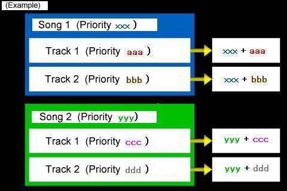

| While it is possible to have more than one Music Player run simultaneously, the Sound Circuits in the AGB
System have only the Compatible Sounds 1 ~ 4 and the Direct Sounds A and B. For this reason, the Music Player skillfully interweaves the sound sources while playing multiple songs at the same time. Then what happens when, for instance, one Music Player is using all of the Simultaneously-Produced Direct Sounds and another Music Player wants to produce a Direct Sound? This is a problem especially when you would like to prioritize the latter Music Player's song, but there are no open sound sources. As a solution, this system has "Priorities (Sound Production Priorities)" which can be set. In the above situation, if the priority of the latter song is higher than that of the former, the sound source for the song of the latter Music Player will be played in place of the former. The Music Player whose place was taken, will continue to "play silently" until the sound source opens up again, at which point it will begin playing again. That is, when there are several songs to be played at the same time, those with the higher priority will be played first, making it more likely that the ones with lower priority numbers will not be able to play. Note that this makes it sound as though there is a danger that songs with lower priority numbers may not get played, but the way the system works, during actual performance, the song will be skillfully interwoven into the rests and quiet areas of other songs. |

Figure: Conceptual Diagram of Priorities
| The larger the value of the aforementioned (xxx + aaa), (xxx + bbb), (yyy + ccc), and (yyy + ddd),the higher the priority of the sound source will be. When the priorities within the same song are the same, the ones with lower track numbers will be given a higher priority. For example, if Song 1 in the aforementioned example were aaa = bbb, then track one would be prioritized. When the priorities of different songs are the same, which one will be prioritized is not consistent. ( Many different conditions are involved so nothing definite can be said.) In the above example, if it happened that (xxx + aaa) = (yyy + ddd), then it is impossible to predict which one would be given priority. |
| Next:[ Description of Files ] Back:[ Background Music and Sound Effects ] TOP :[ Table of Contents ] |